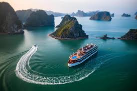
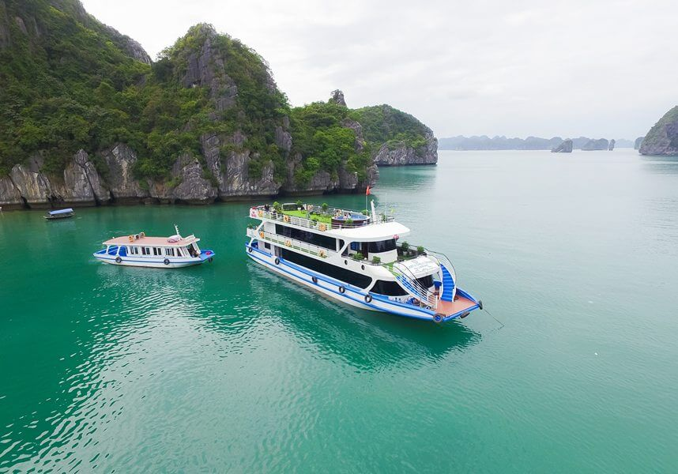

Vịnh Hạ Long - kỳ quan thiên nhiên thế giới với hàng nghìn đảo đá vôi hùng vĩ là điểm đến không thể bỏ qua khi du lịch miền Bắc. Trải nghiệm du thuyền 2 ngày 1 đêm sẽ cho bạn cơ hội khám phá trọn vẹn vẻ đẹp của di sản UNESCO này.
Ngày 1: Khởi hành - Khám phá vịnh Hạ Long
Buổi sáng:
• 7h30: Xe đón tại khách sạn ở Hà Nội, di chuyển về Hạ Long (khoảng 2.5 tiếng)
• 10h30: Đến bến tàu Tuần Châu, làm thủ tục lên tàu
• 11h00: Nhận phòng trên tàu, nghe phổ biến nội quy an toàn
Buổi trưa:
• 12h00: Thưởng thức bữa trưa buffet với các món hải sản tươi ngon trên tàu
• 13h30: Thăm hang Sửng Sốt - một trong những hang động đẹp nhất Hạ Long
Buổi chiều:
• 15h00: Kayak khám phá hang Luồn và làng chài Cửa Vạn
• 16h30: Tắm biển tại bãi Titop hoặc leo lên đỉnh núi ngắm toàn cảnh vịnh
• 18h30: Tham gia lớp học nấu ăn món nem cuốn truyền thống
Buổi tối:
• 19h30: Bữa tối thịnh soạn trên boong tàu với các món hải sản đặc sản
• 21h00: Câu mực đêm hoặc thư giãn tại bar trên tàu
Ngày 2: Bình minh trên vịnh - Trở về

Buổi sáng:
• 6h00: Ngắm bình minh trên vịnh, tập thái cực quyền trên boong tàu
• 7h00: Bữa sáng nhẹ với bánh mì, trứng và hoa quả tươi
• 8h00: Thăm làng chài Ba Hang hoặc hang Trống (tùy lộ trình tàu)
• 9h30: Check-out phòng, thanh toán các chi phí phát sinh
Buổi trưa:
• 10h30: Bữa trưa farewell (bữa trưa chia tay) trên tàu
• 11h30: Tàu cập bến Tuần Châu, kết thúc hành trình
• 12h00: Xe đưa trở lại Hà Nội, dự kiến đến khoảng 14h30
Các loại tàu phổ biến
Tàu 3 sao: Giá từ 150-200 USD/khách, tiện nghi cơ bản, phù hợp túi tiền
Tàu 4 sao: Giá từ 250-350 USD/khách, không gian sang trọng, dịch vụ cao cấp
Tàu 5 sao: Giá từ 400 USD trở lên, phòng suite sang trọng, bể bơi riêng
Tàu gỗ cổ điển: Thiết kế truyền thống, mang đậm nét văn hóa Việt
Tàu hiện đại: Thiết kế tối giản, nhiều tiện nghi công nghệ cao
Kinh nghiệm đặt tour
Thời điểm lý tưởng:
• Tháng 4-6 và 9-11: Thời tiết đẹp, biển lặng, ít mưa
• Tránh tháng 7-8 do mưa bão có thể hủy tour
Mẹo đặt tour:
• Đặt trước ít nhất 2 tuần vào mùa cao điểm
• Kiểm tra kỹ lịch trình và dịch vụ bao gồm
• Nên chọn tàu mới để có trải nghiệm tốt hơn
• Mang theo tiền mặt để thanh toán các dịch vụ phát sinh
Những điều cần mang theo
- Giấy tờ tùy thân (CMND/CCCD hoặc passport)
- Quần áo bơi, kem chống nắng, mũ rộng vành
- Thuốc say sóng nếu dễ bị say tàu xe
- Máy ảnh, power bank để lưu lại khoảnh khắc đẹp
- Áo khoác nhẹ cho buổi tối trên vịnh
Hành trình du thuyền 2 ngày 1 đêm trên Vịnh Hạ Long sẽ để lại cho bạn những kỷ niệm khó quên giữa khung cảnh thiên nhiên hùng vĩ. Từ những hang động kỳ bí đến những bãi biển nhỏ xinh, từ bữa ăn ngon đến những hoạt động thú vị trên tàu - tất cả tạo nên một trải nghiệm du lịch hoàn hảo.